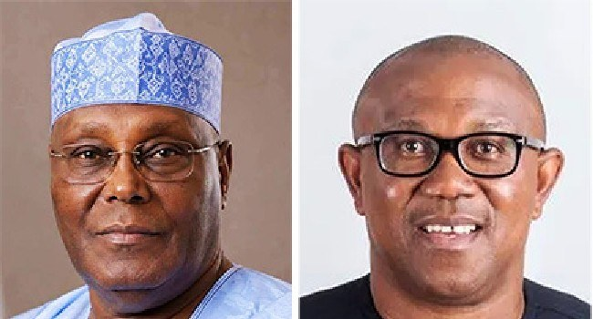

Tracking The Opposition

Tracking the Opposition
A Federal High Court in Abuja on November 5 invalidated the leadership led by David Mark and decisions made under it, including Atiku Abubakar’s presidential nomination and other candidate nominations. The ADC has rejected the judgment and says it will appeal. Its campaign council announced plans to seek interim relief, but no appeal, stay application or order suspending the judgment had been independently verified in the material reviewed. The ruling leaves the party facing uncertainty over its presidential ticket and state candidates. Allegations by the ADC of interference by the APC remain unsubstantiated in the reporting reviewed.
A separate leadership dispute within the PDP also encountered a setback. On November 4, the Court of Appeal upheld the dismissal of a suit by the Wabara-led Board of Trustees seeking INEC recognition for the Turaki-led interim committee. The underlying decision concerned the plaintiffs’ legal standing; the appeal court also described the appeal as academic and an abuse of process. The faction says it plans to approach the Supreme Court. The decision constrains its claim to direct the party, but does not automatically invalidate every PDP nomination.
In Abia, Abraham Amah, identified as the PDP state chairman and deputy governorship candidate, announced support for Tinubu’s re-election at the November 5 inauguration of the APC presidential campaign council. Amah was assigned an interparty mobilisation role. The announcement creates competing political commitments within the state party organisation and could weaken PDP efforts to mobilise for its presidential candidate. It establishes an endorsement and campaign role, not a formal defection or evidence that party supporters will follow him.
Peter Obi, in a November 5 statement, said he was concerned the ADC judgment could restrict electoral choice and disrupt opposition preparations. His intervention does not establish a joint ticket or withdrawal agreement. The key developments to watch include any ADC court filings or interim orders, INEC’s response to the judgment and the Turaki faction’s planned Supreme Court filing. No new order resolving the Ogun, Kano or Niger nomination disputes was established in the material reviewed.
Source: Channels TV